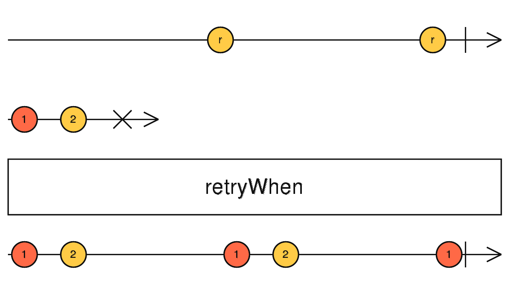

retryWhen
参数列表：
-
notificationHandler
function(errors: Observable): Observable
一个函数，接收参数为一个source里发出的error的observable,返回一个Observable.返回的observable每emit一个值，retryWhen就会继续重新订阅一次Source.
返回值: Observable
珠宝图:

功能说明:
- 每次notifier返回的Observable输出一个值，就对Source进行重试
备注事项:
点击不同按钮查看不同demo 代码效果